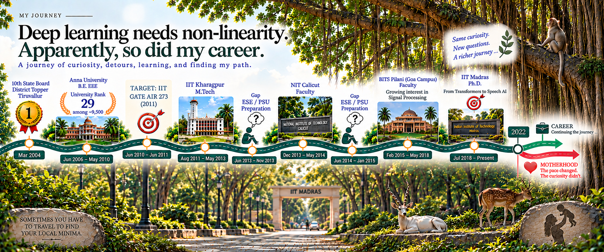
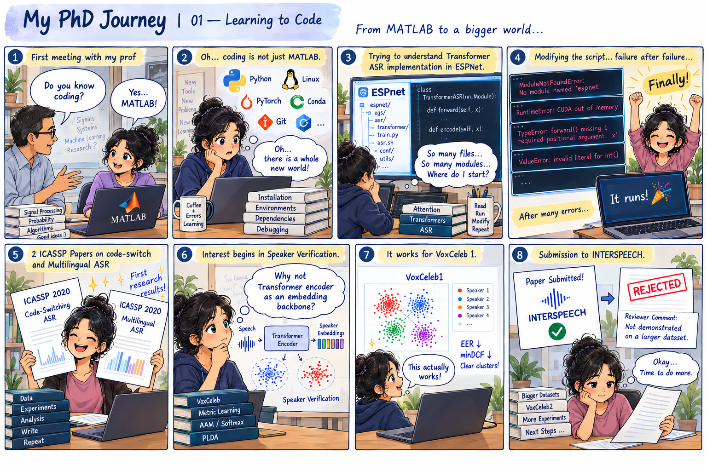
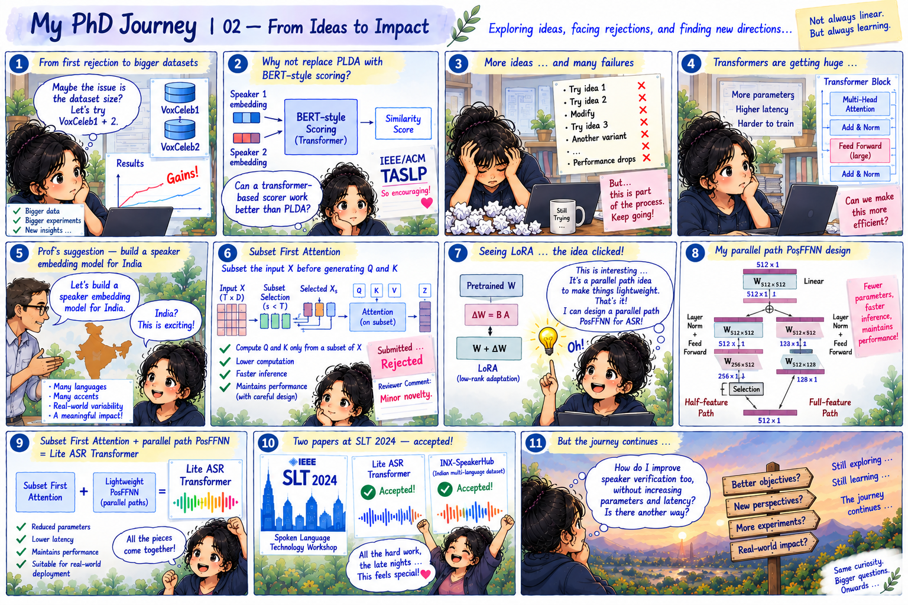
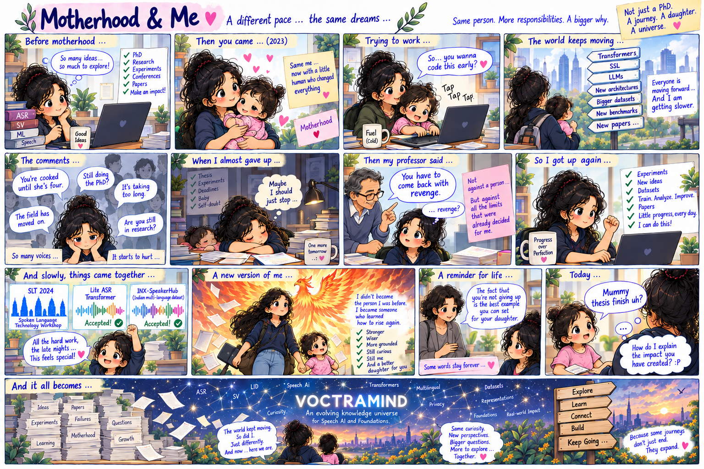

Understanding Speech AI from the ground up.
I am at the verge of completing my PhD at IIT Madras. My work has taken me deep into Speech AI, deep learning, and representation learning, with my research primarily centred on speaker verification, speech representation learning, and efficient speech recognition.
But my learning has never been restricted to my thesis. I explore Speech AI broadly — following questions across different speech problems and the representations, learning objectives, and architectures behind them.
What I enjoy most is going underneath the model.
I don't rest at “it works.” I want to understand why it works, what makes it work, and what lies underneath it. That usually takes me on a roller coaster ride — mathematics, probability, geometry, optimisation, and the principles that shape an architecture.
These days, I spend my time learning, researching, teaching, and building around Speech AI.
Still curious. Still learning. Still going deeper.




This website is the result of my everyday wrestle with Speech AI — pulling ideas apart, chasing the mathematics, and asking one question again and again:
Why does this work?
It is my attempt to make that journey a little simpler for anyone else who worries about every why.
DISCOVER SPEECH → MODEL MACHINERY →A little kudos to ChatGPT for making the messy parts of this process simpler and faster — helping turn notes, questions, equations, and half-formed ideas into something I could share with people sooner.
The one wrestling with the ideas is still me. The extra pair of hands just happens to be AI.